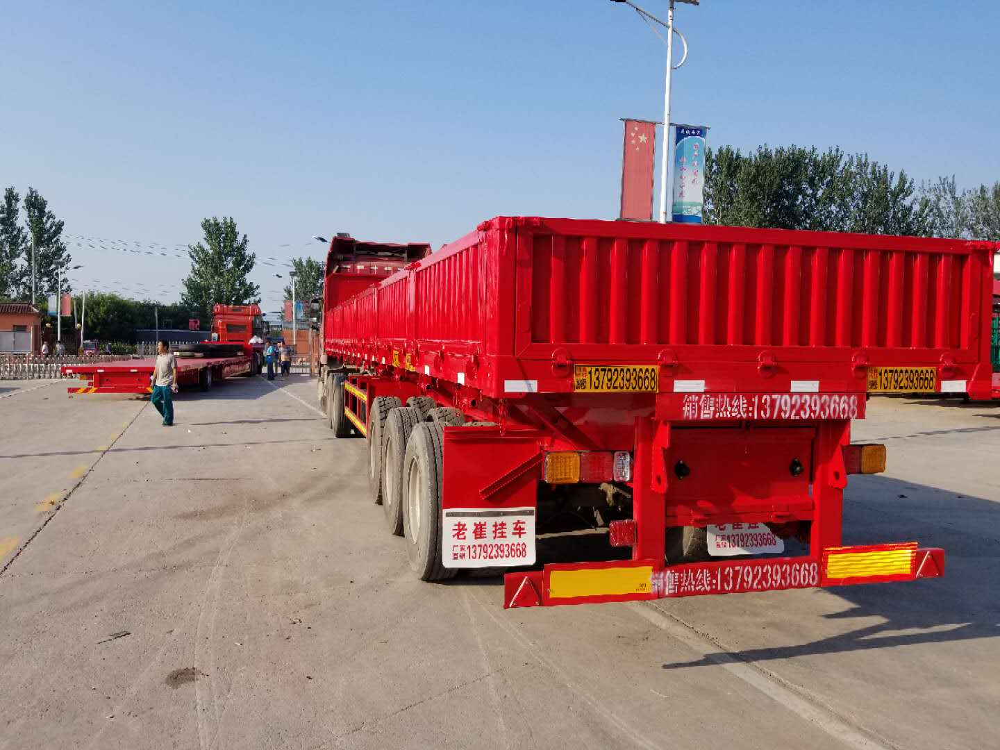
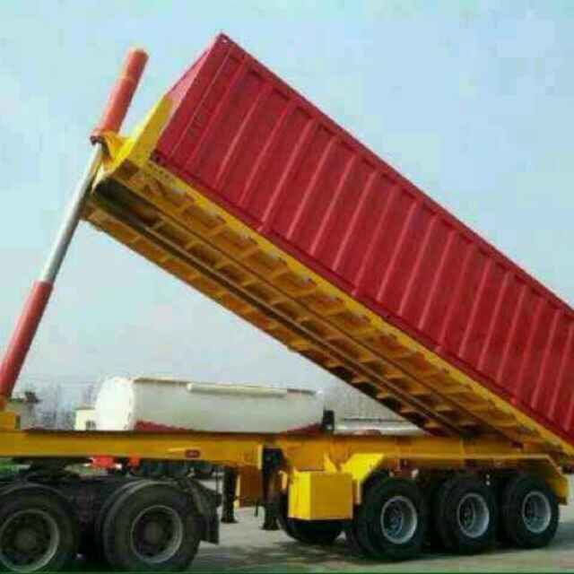
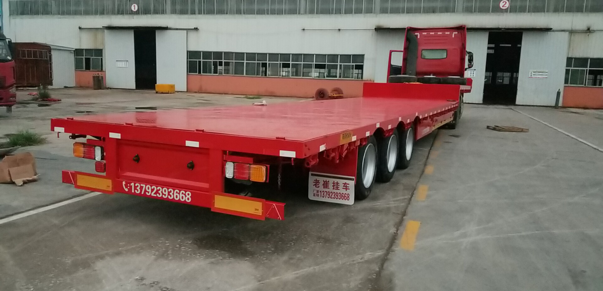

国家工信部汽车《公告》企业
设为首页
|
加入收藏
首页
公司简介
产品中心
新闻资讯
联系我们
产品实景
更多产品+

侧翻自卸半挂车
2018-09-07

后翻自卸半挂车
2018-09-07
仓栅式半挂车
2018-09-07
平板自卸半挂车
2018-09-07

低平板挂车
2018-09-07
钩机板半挂车
2018-09-07
最新通知
更多
挂车厂家常见换油误区。
2018-09-10
威华挂车厂介绍雾天行车的注意事项
2018-09-11
半挂车远光灯使用一定要规范
2018-09-10
如何辨别挂车机油质量？
2018-09-12
挂车打滑原因分析及应急办法
2018-09-13
挂车出行前要检查哪些？
2018-09-11
友情链接：
梁山威华
专业挂车制造